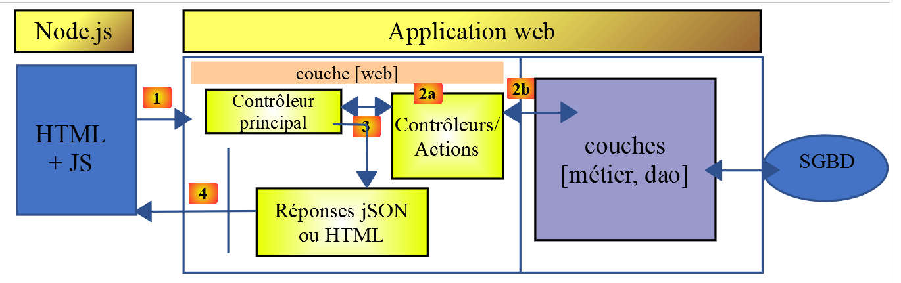
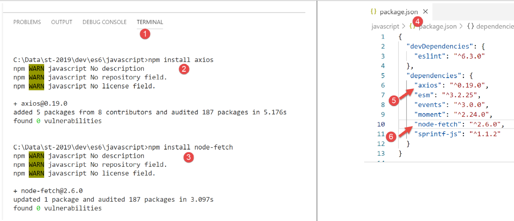
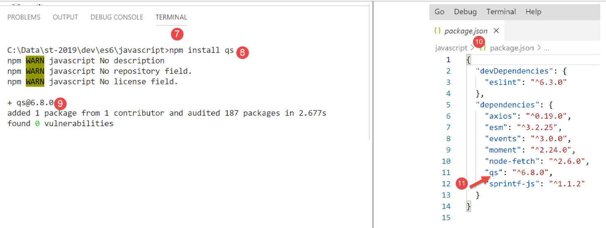

12. Funciones HTTP JavaScript

12.1. Elegir una biblioteca HTTP
Aquí hemos elegido dos bibliotecas:
ECMAScript 6 tiene de forma nativa una función HTTP llamada [fetch] que no está implementada por [node.js] (a fecha de septiembre de 2019). Existe una librería llamada [node-fetch] que permite utilizar la función [fetch] en Node. Esta librería utiliza ciertas APIs específicas de [node.js]. [node-fetch] por tanto, el código puede no ser 100% portable a un entorno que no sea[node] como un navegador;
También existe una librería llamada [axios] dedicada a peticiones HTTP que es compatible tanto con [node.js] como con navegadores. Esta es la librería que utilizaremos en última instancia.
Presentaremos el mismo script escrito utilizando ambas librerías para demostrar que el enfoque de codificación es similar.
12.2. Configuración de un entorno de desarrollo
12.2.1. Instalación del servidor de cálculo de impuestos
En definitiva, escribiremos una aplicación web con la siguiente arquitectura:

JS: JavaScript
El código JavaScript es del lado del cliente:
- de un servicio que proporciona páginas estáticas o fragmentos;
- un servicio JSON;
El código JavaScript es, por tanto, un cliente JSON y, como tal, puede organizarse en capas [UI, lógica de negocio, DAO] (UI: User Interface) al igual que nuestros clientes JSON escritos en PHP.
El servidor será el servidor de cálculo de impuestos para el que ya hemos escrito 13 versiones. Vamos a escribir una decimocuarta. Comenzamos por tanto duplicando, en NetBeans, la carpeta de la versión 13 en la carpeta de la versión 14:

- en [6], modificamos el [config.json] archivo de la versión 14 como sigue:
{ "databaseFilename": "Config/database.json", "rootDirectory": "C:/myprograms/laragon-lite/www/php7/scripts-web/impots/version-14", "relativeDependencies": [ "/Entities/BaseEntity.php", "/Entities/Simulation.php", ... "views": { "authentication-view.php": [700, 221, 400], "tax-calculation-view.php": [200, 300, 341, 350, 800], "simulation-list-view.php": [500, 600] }, "error-views": "error-views.php" } - En la línea 3, cambiamos el directorio raíz de la aplicación'
Para acceder a este servidor, debes iniciar los [Laragon] servicios.
Una vez hecho esto, podemos probar esta nueva versión del servidor-que actualmente es idéntica a la versión 13-usando [Postman] (ver artículo enlazado). Podemos utilizar la colección de peticiones utilizadas para probar la versión 12 del servidor de cálculo de impuestos:

- en [1-4], utiliza la [init-session-700] petición para inicializar una sesión JSON;
- en [4-5], sustituye [versión-12] por [versión-14] para probar la versión 14 del proyecto;
- tras la ejecución, deberíamos recibir la respuesta JSON [6] del servidor;
La versión 14 del servidor ya está operativa. Necesitaremos modificarlo ligeramente. Vamos a revisar la API de este servidor:
|
Acción |
Role |
Contexto de ejecución |
|
iniciar sesión |
Se utiliza para establecer el tipo (json, xml, html) de las respuestas deseadas |
GET request main.php?action=init-session&type=x se puede enviar en cualquier momento |
|
autenticar-usuario |
Autoriza o deniega el inicio de sesión de un usuario |
POSTsolicitud main.php?action=authenticate-usuario La solicitud debe tener dos parámetros publicados [usuario, contraseña] Sólo se puede emitir si se conoce el tipo de sesión (json, xml, html) |
|
calcular-impuestos |
Realiza una simulación de cálculo de impuestos |
POST solicitud a main.php?action=calculate-tax La solicitud debe tener tres parámetros publicados [casado, hijos, salario] Sólo puede emitirse si se conoce el tipo de sesión (json, xml, html) y el usuario está autenticado |
|
lista-simulaciones |
Solicitud de visualización de la lista de simulaciones realizadas desde el inicio de la sesión |
GET request main.php?action=list-simulations La solicitud no acepta ningún otro parámetro Sólo puede emitirse si se conoce el tipo de sesión (json, xml, html) y el usuario está autenticado |
|
borrar-simulación |
Elimina una simulación de la lista de simulaciones |
GET request main.php?action=list-simulations&number=x La solicitud no acepta ningún otro parámetro Sólo puede emitirse si se conoce el tipo de sesión (json, xml, html) y el usuario está autenticado |
|
finalizar sesión |
Termina la sesión de simulación. |
Técnicamente, se elimina la sesión web antigua y se crea una nueva Sólo puede emitirse si se conoce el tipo de sesión (json, xml, html) y el usuario está autenticado |
12.2.2. Instalación de las bibliotecas HTTP del cliente JavaScript
Inicialmente, trabajaremos con la siguiente arquitectura:

- En [1], un script de consola [node.js] realiza una petición HTTP al servidor JSON de cálculo de impuestos;
- En [4], recibe esta respuesta y la muestra en la consola;
En el Ejemplo 1, utilizaremos las [node-fetch] y [axios] bibliotecas, y luego sólo conservaremos [axios] para los siguientes ejemplos. Ahora instalaremos estas dos librerías JavaScript desde el [VSCode] terminal:

También utilizaremos la [qs] biblioteca, que permite la codificación URL de una cadena. Recordemos que esta codificación se utiliza para codificar los parámetros de una petición HTTP GET o POST.

12.3. script [fetch-01]
El [fetch-01] script utiliza la [node-fetch] biblioteca para inicializar una sesión JSON con el servidor de cálculo de impuestos. Su código es el siguiente:
'use strict';
// imports
import fetch from 'node-fetch';
import qs from 'qs';
import { sprintf } from 'sprintf-js';
import moment from 'moment';
// Base URL of the tax calculation server
const baseUrl = 'http://localhost/php7/scripts-web/impots/version-14/main.php?';
// Initialize session
async function initSession() {
// HTTP request options [get /main.php?action=init-session&type=json]
const options = {
method: "GET",
timeout: 2000
};
// Execute the HTTP request [get /main.php?action=init-session&type=json]
let startFetch;
try {
// asynchronous request - [fetch] returns a promise
startFetch = moment(Date.now());
const response = await fetch(baseUrl + qs.stringify({
action: 'init-session',
type: 'json'
}), options);
// [response] is the entire HTTP response from the server (HTTP headers + the response itself)
// we display this response to see its structure
console.log(sprintf("Fetch response formatted as JSON,=%j, %s", response, time(startFetch)));
console.log("Fetch response in JavaScript =", response);
// we can access the HTTP headers
console.log("response headers=", response.headers);
// If the response type is application/json, the JSON response from the server is retrieved using the asynchronous function [response.json()]
// In this case, the calling code receives a [Promise] object
// [await] allows you to retrieve the server's [json] response rather than its promise
const startJson = moment(Date.now());
const object = await response.json();
console.log(sprintf("json response=%j, type=%s, %s", object, typeof(object), time(startJson)));
return object;
// if the response is of type text / plain, the server's text response is obtained with [response.text()]
// in this case, the calling code receives a [Promise] object
// [await] allows you to get the server's [text] response rather than its promise
// const text = await response.text();
// console.log("text response=", text);
// return text;
} catch (error) {
// We're here because the server sent an error code [404 Not Found, ...] with an empty body—we log the error to see its structure
// or because the client [fetch] threw an exception (network unreachable, ...)
// we display the error structure
console.log(sprintf("error fetch in json=%j, %s", error, time(startFetch)));
console.log("fetch error in JavaScript=", typeof(error), error);
// we log the received error message
throw error.message;
}
}
// The main function executes the asynchronous function [initSession]
async function main() {
try {
console.log("HTTP request to the server in progress ---------------------------------------------");
const response = await initSession();
console.log("success ---------------------------------------------");
console.log("response=", response, typeof (response))
} catch (error) {
console.log("error ---------------------------------------------");
console.log("error=", error, typeof(error));
}
}
// test
main();
// utility for displaying time and duration
function getTime(start) {
// current time
const now = moment(Date.now());
// time formatting
let result = "time=" + now.format("HH:mm:ss:SSS");
// Do we need to calculate a duration?
if (start) {
const duration = now - start;
const milliseconds = duration % 1000;
const seconds = Math.floor(duration / 1000);
// Format time + duration
result = result + sprintf(", duration= %s seconds and %s milliseconds", seconds, milliseconds);
}
// result
return result;
}
Comentarios
- Las funciones HTTP de JavaScript son funciones asíncronas. Aquí estamos aplicando lo aprendido en la sección anterior (véase enlace);
- línea 24: para esperar a que la respuesta de la función asíncrona [fetch] se publique en el [node.js] bucle de eventos, utilizamos la palabra clave [await]. Sabemos que esta declaración debe estar dentro de código prefijado por la palabra clave [async] (línea 13);
- líneas 13-56: encapsulamos el código HTTP dentro de la función asíncrona [initSession];
- líneas 59-69: una segunda función asíncrona [main] se utiliza para llamar a la función asíncrona [initSession] de forma bloqueante (async/await);
- línea 72: se llama a la función asíncrona [main] ;
- aunque todo el código parece código síncrono, en realidad se trata de funciones asíncronas que se ejecutan, pero de forma bloqueante;
- línea 19: para inicializar una sesión JSON con el servidor de cálculo de impuestos, debes enviarle la petición HTTP [get /main.php?action=init-session&type=json]. Esto es lo que hace el código de las líneas 24-27. La sintaxis para [fetch] es la siguiente: [fetch(URL, options)] con:
- [URL]: la URL que se está consultando;
- [opciones]: un objeto que define las opciones de la petición. Aquí es donde definimos las cabeceras HTTP que queremos enviar al servidor de destino;
- líneas 15-18: definimos las opciones de la petición que queremos realizar:
- [método]: queremos realizar un GET;
- [timeout]: queremos que el [fetch] cliente no espere más de 2 segundos la respuesta del servidor. Si se supera este tiempo de espera, [fetch] lanzará una excepción;
- línea 24: para obtener la URL [/main.php?action=init-session&type=json], utilizamos la [qs] biblioteca para obtener los parámetros codificados en la URL [action,type] de la petición GET. La cadena resultante es [init-session&type=json], que podríamos haber construido nosotros mismos. Simplemente queríamos demostrar cómo obtener una cadena codificada en URL;
- línea 24: la palabra clave [await] indica que aquí se está lanzando una tarea asíncrona y que estamos esperando a que publique su respuesta en el [node.js] bucle de eventos;
- línea 24: en [response], obtenemos un objeto complejo que describe toda la respuesta HTTP recibida (cabeceras y cuerpo);
- líneas 30-31: Imprimimos el [respuesta] objeto para ver su estructura, primero como cadena y luego como objeto JavaScript;
- línea 33: mostramos las cabeceras HTTP enviadas por el servidor;
- Línea 38: Sabemos que el servidor de cálculo de impuestos enviará una cadena JSON. Esta cadena está encapsulada en el objeto [response] . Podemos recuperarla mediante el método [response.json()] . Sin embargo, este método es asíncrono. Por tanto, escribimos [await response.json()] para recuperar la cadena JSON que se publicará en el [node.js] bucle de eventos. De hecho, no es la cadena JSON en sí lo que obtenemos, sino el objeto JavaScript representado por ella;
- línea 39: visualización de la cadena JSON recibida;
- línea 40: devuelve el objeto JavaScript recibido;
- línea 47: capturamos cualquier error potencial de la [fetch] declaración. Esto sólo lanza una excepción si la operación HTTP falló y no se recibió ninguna respuesta del servidor. Si se recibió una respuesta, incluso con un código de estado HTTP distinto de [200 OK], [fetch] no lanza una excepción, y la respuesta del servidor estará disponible en la línea 38;
- líneas 51-52: se muestra el [error] objeto recibido por la [catch] cláusula, primero como cadena JSON y luego como objeto JavaScript;
- línea 54: el mensaje de error de [fetch] se almacena en [error.message];
- líneas 59-69: la función asíncrona [main] llama a la función asíncrona [initSession] de forma bloqueante (await en la línea 62);
- línea 72: la función asíncrona [main] se lanza, y el código del script principal se completa. El script global terminará cuando las tareas asíncronas lanzadas hayan publicado sus resultados en el bucle de eventos;
Los resultados de la ejecución son los siguientes:
Caso 1: el servidor Laragon no se está ejecutando
[Running] C:\myprograms\laragon-lite\bin\nodejs\node-v10\node.exe -r esm "c:\Data\st-2019\dev\es6\javascript\http\fetch-01.js"
HTTP request to the server in progress ---------------------------------------------
Fetch error in JSON: {"message":"network timeout at: http://localhost/php7/scripts-web/impots/version-14/main.php?action=init-session&type=json","type":"request-timeout"}, time=10:08:48:180, duration= 2 seconds and 62 milliseconds
fetch error in JavaScript = object { FetchError: network timeout at: http://localhost/php7/scripts-web/impots/version-14/main.php?action=init-session&type=json
at Timeout.<anonymous> (c:\Data\st-2019\dev\es6\javascript\node_modules\node-fetch\lib\index.js:1448:13)
at ontimeout (timers.js:436:11)
at tryOnTimeout (timers.js:300:5)
at listOnTimeout (timers.js:263:5)
at Timer.processTimers (timers.js:223:10)
message:
'network timeout at: http://localhost/php7/scripts-web/impots/version-14/main.php?action=init-session&type=json',
type: 'request-timeout' }
error ---------------------------------------------
error= network timeout at: http://localhost/php7/scripts-web/impots/version-14/main.php?action=init-session&type=json string
[Done] exited with code=0 in 2.804 seconds
Comentarios
- línea 3: la petición HTTP falla tras 2 segundos y 62 milisegundos debido al tiempo de espera de 2 segundos impuesto a la petición HTTP;
- líneas 4-9: el [error] objeto JavaScript interceptado por la [catch(error)] cláusula. Este objeto tiene dos propiedades:
- [FetchError]: línea 4;
- [mensaje]: líneas 10-12;
- línea 14: el mensaje de error recibido por la función asíncrona [main];
Caso 2: El servidor Laragon se está ejecutando
[Running] C:\myprograms\laragon-lite\bin\nodejs\node-v10\node.exe -r esm "c:\Data\st-2019\dev\es6\javascript\http\fetch-01.js"
HTTP request to the server in progress ---------------------------------------------
Fetch response formatted in JSON,={"size":0,"timeout":2000}, time=10:13:50:814, duration= 0 seconds and 375 milliseconds
Fetch response in JavaScript = Response {
size: 0,
timeout: 2000,
[Symbol(Body internals)]:
{ body:
PassThrough {
_readableState: [ReadableState],
readable: true,
domain: null,
_events: [Object],
_eventsCount: 2,
_maxListeners: undefined,
_writableState: [WritableState],
writable: false,
allowHalfOpen: true,
_transformState: [Object] },
disturbed: false,
error: null },
[Symbol(Response internals)]:
{ url:
'http://localhost/php7/scripts-web/impots/version-14/main.php?action=init-session&type=json',
status: 200,
statusText: 'OK',
headers: Headers { [Symbol(map)]: [Object] },
counter: 0 } }
response headers = Headers {
[Symbol(map)]:
[Object: null prototype] {
date: [ 'Sat, 14 Sep 2019 08:13:50 GMT' ],
server: [ 'Apache/2.4.35 (Win64) OpenSSL/1.1.0i PHP/7.2.11' ],
'x-powered-by': [ 'PHP/7.2.11' ],
'cache-control': [ 'max-age=0, private, must-revalidate, no-cache, private' ],
'set-cookie': [ 'PHPSESSID=99q2iinusmhl55fa600aie2mmu; path=/' ],
'content-length': [ '86' ],
connection: [ 'close' ],
'content-type': [ 'application/json' ] } }
response json={"action":"init-session","status":700,"response":"session started with type [json]"}, type=object, time=10:13:50:825, duration= 0 seconds and 1 milliseconds
success ---------------------------------------------
response = { action: 'init-session',
'status': 700,
'response': 'session started with type [json]' } object
[Done] exited with code=0 in 1.022 seconds
Comentarios
- línea 3: [fetch] recibe la respuesta del servidor tras 375 ms;
- líneas 4-39: la estructura del objeto JavaScript [response] encapsulando la respuesta del servidor. Entre sus propiedades, algunas pueden interesarnos:
- [status] (línea 25): Código de estado HTTP de la respuesta del servidor'
- [statusText] (línea 26): texto asociado a este código;
- [cabeceras] (línea 27): las cabeceras HTTP de la respuesta del servidor;
- [body] (línea 8): representa el documento enviado por el servidor. La sentencia [fetch] proporciona métodos para trabajar con él;
- líneas 29-39: las cabeceras HTTP de la respuesta del servidor;
- línea 40: la función asíncrona [response.json()] devuelve su respuesta tras 1 milisegundo;
- líneas 42-44: el objeto JavaScript recibido por la función asíncrona [main];
Caso 3: El servidor Laragon se está ejecutando, pero se le envía un comando incorrecto:

- arriba, línea 26, se pasa un tipo de sesión incorrecto al servidor;
Los resultados de la ejecución son los siguientes:
HTTP request to the server in progress ---------------------------------------------
Fetch response formatted as JSON,={"size":0,"timeout":2000}, time=10:27:54:114, duration= 0 seconds and 136 milliseconds
Fetch response in JavaScript = Response {
size: 0,
timeout: 2000,
[Symbol(Body internals)]:
{ body:
PassThrough {
_readableState: [ReadableState],
readable: true,
domain: null,
_events: [Object],
_eventsCount: 2,
_maxListeners: undefined,
_writableState: [WritableState],
writable: false,
allowHalfOpen: true,
_transformState: [Object] },
disturbed: false,
error: null },
[Symbol(Response internals)]:
{ url:
'http://localhost/php7/scripts-web/impots/version-14/main.php?action=init-session&type=x',
status: 400,
statusText: 'Bad Request',
headers: Headers { [Symbol(map)]: [Object] },
counter: 0 } }
response headers = Headers {
[Symbol(map)]:
[Object: null prototype] {
date: [ 'Sat, 14 Sep 2019 08:27:54 GMT' ],
server: [ 'Apache/2.4.35 (Win64) OpenSSL/1.1.0i PHP/7.2.11' ],
'x-powered-by': [ 'PHP/7.2.11' ],
'cache-control': [ 'max-age=0, private, must-revalidate, no-cache, private' ],
'set-cookie': [ 'PHPSESSID=5ku9gfok81ikj98hia0meeum57; path=/' ],
'content-length': [ '79' ],
connection: [ 'close' ],
'content-type': [ 'application/json' ] } }
response json={"action":"init-session","status":703,"response":"invalid type=[x] parameter"}, type=object, time=10:27:54:127, duration= 0 seconds and 2 milliseconds
success ---------------------------------------------
response = { action: 'init-session',
'status': 703,
'response': 'invalid type=[x] parameter' } object
[Done] exited with code=0 in 0.712 seconds
- La respuesta del servidor se recibe en la línea 2;
- línea 24: podemos ver que el código de estado HTTP de la respuesta del servidor es 400, un código de error. Sin embargo, [fetch] no lanza una excepción. Mientras [fetch] reciba una respuesta del servidor, la procesa y no lanza una excepción;
- líneas 41-43: la respuesta obtenida por la función asíncrona [main];
12.4. script [fetch-02]
El siguiente script reutiliza el [fetch-01] script a la vez que elimina todos los detalles innecesarios:
'use strict';
// imports
import fetch from 'node-fetch';
import qs from 'qs';
// Base URL of the tax calculation server
const baseUrl = 'http://localhost/php7/scripts-web/impots/version-14/main.php?';
// Initialize session
async function initSession() {
// HTTP request options [get /main.php?action=init-session&type=json]
const options = {
method: "GET",
timeout: 2000
};
// Execute the HTTP request [get /main.php?action=init-session&type=json]
const response = await fetch(baseUrl + qs.stringify({
action: 'init-session',
type: 'json'
}), options);
// Result received in JSON
return await response.json();
}
// The main function executes the asynchronous function [initSession]
async function main() {
try {
console.log("HTTP request to the server in progress ---------------------------------------------");
const response = await initSession();
console.log("success ---------------------------------------------");
console.log("response=", response)
} catch (error) {
console.log("error ---------------------------------------------");
console.log("error=", error.message);
}
}
// test
main();
Resultados de una ejecución normal:
[Running] C:\myprograms\laragon-lite\bin\nodejs\node-v10\node.exe -r esm "c:\Data\st-2019\dev\es6\javascript\http\fetch-02.js"
HTTP request to the server in progress ---------------------------------------------
success ---------------------------------------------
response= { action: 'init-session',
'status': 700,
'response': 'session started with type [json]' }
[Done] exited with code=0 in 0.56 seconds
Resultado de una ejecución con una excepción (parada del servidor Laragon):
[Running] C:\myprograms\laragon-lite\bin\nodejs\node-v10\node.exe -r esm "c:\Data\st-2019\dev\es6\javascript\http\fetch-02.js"
HTTP request to the server in progress ---------------------------------------------
error ---------------------------------------------
error= network timeout at: http://localhost/php7/scripts-web/impots/version-14/main.php?action=init-session&type=json
[Done] exited with code=0 in 2.701 seconds
12.5. script [axios-01]
Aquí revisitamos el [fetch-01] script, que reescribimos usando la [axios] librería. Como recordatorio, nuestro interés en esta biblioteca radica en su portabilidad entre el [node.js] entorno y los navegadores comunes. Esto permite:
- En la Fase 1, probar nuestros scripts en un [Node.js] entorno;
- en la fase 2, portarlos a un navegador;
El [axios-01] script sigue la estructura del [fetch-01] script:
'use strict';
import axios from 'axios';
// default axios configuration
axios.defaults.timeout = 2000;
axios.defaults.baseURL = 'http://localhost/php7/scripts-web/impots/version-14';
// initialize session
async function initSession(axios) {
// HTTP request options [get /main.php?action=init-session&type=json]
const options = {
method: "GET",
// URL parameters
params: {
action: 'init-session',
type: 'json'
}
};
// Execute the HTTP request [get /main.php?action=init-session&type=json]
try {
// asynchronous request
const response = await axios.request('main.php', options);
// response is the entire HTTP response from the server (HTTP headers + the response body)
// display this response to see its structure
console.log("axios response=", response);
// The server's response is in [response.data]
return response.data;
} catch (error) {
// we're here because the server sent an error code [404 Not Found, 500 Internal Server Error, ...]
// the [error] parameter is an exception instance—it can take various forms
// we log it to see its structure
console.log("axios error=", typeof (error), error);
if (error.response) {
// The server reported an error in the HTTP status, but it also sent a response
// so this is found in [error.response.data]
// we know that the server sends JSON responses with the structure {action, status, response}
// and that in case of an error, the error message is in [response]
return error.response.data;
} else {
// we throw the error
throw error;
}
}
}
// The main function executes the asynchronous function [initSession]
async function main() {
try {
console.log("HTTP request to the server in progress ---------------------------------------------");
const response = await initSession(axios);
console.log("success ---------------------------------------------");
console.log("response=", response, typeof (response))
} catch (error) {
console.log("error ---------------------------------------------");
console.log("error=", error.message);
}
}
// test
main();
Comentarios
- línea 2: importamos la [axios] biblioteca;
- líneas 5-6: configuración por defecto para peticiones HTTP. Las [axios.defaults] opciones se aplican a todas las peticiones HTTP enviadas por el [axios] objeto sin necesidad de especificarlas para cada nueva petición;
- línea 5: tiempo de espera de 2 segundos para todas las peticiones;
- línea 6: todas las URL serán relativas a la URL base;
- línea 9: la asíncrona [initSession] función;
- líneas 11-18: las opciones de la petición HTTP a enviar (además de las opciones por defecto ya definidas en las líneas 5-6);
- líneas 14-17: los parámetros URL [action=init-session&type=json]. El [params] objeto se convertirá automáticamente en una cadena codificada en URL;
- línea 22: llamada de bloqueo a la función asíncrona [axios.request]. El primer parámetro es la URL de destino construida como [main.php] aplicada a la URL base definida en la línea 6. El segundo parámetro es el [opciones] objeto de las líneas 11-18;
- línea 25: [respuesta] es un objeto JavaScript que encapsula toda la respuesta HTTP del servidor (cabeceras HTTP + cuerpo de la respuesta). Lo desplegamos para ver su estructura JavaScript;
- línea 27: si el servidor envió un documento, entonces se encuentra en [response.data]. Aquí sabemos que el servidor envía una respuesta JSON acompañada de la cabecera HTTP [Content-type: application/json]. La presencia de esta cabecera hace que [axios] deserialice automáticamente [response.data] en un objeto JavaScript;
- línea 28: la función [axios] puede lanzar una excepción. Aquí es donde [axios] difiere de [fetch]. Se lanza una excepción en los siguientes casos:
- no se ha podido enviar la solicitud HTTP (error del lado del cliente);
- el servidor envió un código de error HTTP (400, 404, 500, etc.) (este comportamiento es realmente configurable). Nótese que si este código de estado HTTP va acompañado de una respuesta, [fetch] no lanza una excepción, mientras que [axios] sí lo hace. Sin embargo, si el código de error HTTP va acompañado de un documento, se coloca en [error.response];
- línea 32: mostramos la estructura JavaScript del [error] objeto;
- líneas 33-38: si el [error] objeto contiene un [respuesta] objeto, esta respuesta se devuelve al código de llamada;
- líneas 39-42: en todos los demás casos, el [error] objeto se devuelve al código de llamada;
- líneas 47-57: la función asíncrona [main];
- línea 50: llamada de bloqueo a la función asíncrona [initSession]. La respuesta JSON del servidor se recupera como un objeto JavaScript;
- líneas 53-56: manejo de cualquier error. El mensaje de error está en [error.message];
Los resultados de la ejecución son los siguientes:
Caso 1: El servidor Laragon no se está ejecutando
[Running] C:\myprograms\laragon-lite\bin\nodejs\node-v10\node.exe -r esm "c:\Data\st-2019\dev\es6\javascript\http\axios-01.js"
HTTP request to the server in progress ---------------------------------------------
axios error= object { Error: timeout of 2000ms exceeded
at createError (c:\Data\st-2019\dev\es6\javascript\node_modules\axios\lib\core\createError.js:16:15)
at Timeout.handleRequestTimeout (c:\Data\st-2019\dev\es6\javascript\node_modules\axios\lib\adapters\http.js:252:16)
at ontimeout (timers.js:436:11)
at tryOnTimeout (timers.js:300:5)
at listOnTimeout (timers.js:263:5)
at Timer.processTimers (timers.js:223:10)
config:
{ url:
'http://localhost/php7/scripts-web/impots/version-14/main.php',
method: 'get',
params: { action: 'init-session', type: 'json' },
headers:
{ Accept: 'application/json, text/plain, */*',
'User-Agent': 'axios/0.19.0' },
baseURL: 'http://localhost/php7/scripts-web/impots/version-14',
transformRequest: [ [Function: transformRequest] ],
transformResponse: [ [Function: transformResponse] ],
timeout: 2000,
adapter: [Function: httpAdapter],
xsrfCookieName: 'XSRF-TOKEN',
xsrfHeaderName: 'X-XSRF-TOKEN',
maxContentLength: -1,
validateStatus: [Function: validateStatus],
data: undefined },
code: 'ECONNABORTED',
request:
Writable {
_writableState:
WritableState {
objectMode: false,
highWaterMark: 16384,
finalCalled: false,
needDrain: false,
ending: false,
ended: false,
finished: false,
destroyed: false,
decodeStrings: true,
defaultEncoding: 'utf8',
length: 0,
writing: false,
corked: 0,
sync: true,
bufferProcessing: false,
onwrite: [Function: bound onwrite],
writecb: null,
writelen: 0,
bufferedRequest: null,
lastBufferedRequest: null,
pendingcb: 0,
prefinished: false,
errorEmitted: false,
emitClose: true,
bufferedRequestCount: 0,
corkedRequestsFree: [Object] },
writable: true,
domain: null,
_events:
[Object: null prototype] {
response: [Function: handleResponse],
error: [Function: handleRequestError] },
_eventsCount: 2,
_maxListeners: undefined,
_options:
{ protocol: 'http:',
maxRedirects: 21,
maxBodyLength: 10485760,
path:
'/php7/scripts-web/impots/version-14/main.php?action=init-session&type=json',
method: 'GET',
headers: [Object],
agent: undefined,
auth: undefined,
hostname: 'localhost',
port: null,
nativeProtocols: [Object],
pathname: '/php7/scripts-web/impots/version-14/main.php',
search: '?action=init-session&type=json' },
_redirectCount: 0,
_redirects: [],
_requestBodyLength: 0,
_requestBodyBuffers: [],
_onNativeResponse: [Function],
_currentRequest:
ClientRequest {
domain: null,
_events: [Object],
_eventsCount: 6,
_maxListeners: undefined,
output: [],
outputEncodings: [],
outputCallbacks: [],
outputSize: 0,
writable: true,
_last: true,
chunkedEncoding: false,
shouldKeepAlive: false,
useChunkedEncodingByDefault: false,
sendDate: false,
_removedConnection: false,
_removedContLen: false,
_removedTE: false,
_contentLength: 0,
_hasBody: true,
_trailer: '',
finished: true,
_headerSent: true,
socket: [Socket],
connection: [Socket],
_header:
'GET /php7/scripts-web/impots/version-14/main.php?action=init-session&type=json HTTP/1.1\r\nAccept: application/json, text/plain, */*\r\nUser-Agent: axios/0.19.0\r\nHost: localhost\r\nConnection: close\r\n\r\n',
_onPendingData: [Function: noopPendingOutput],
agent: [Agent],
socketPath: undefined,
timeout: undefined,
method: 'GET',
path:
'/php7/scripts-web/impots/version-14/main.php?action=init-session&type=json',
_ended: false,
res: null,
aborted: 1568528450762,
timeoutCb: null,
upgradeOrConnect: false,
parser: [HTTPParser],
maxHeadersCount: null,
_redirectable: [Circular],
[Symbol(isCorked)]: false,
[Symbol(outHeadersKey)]: [Object] },
_currentUrl:
'http://localhost/php7/scripts-web/impots/version-14/main.php?action=init-session&type=json' },
response: undefined,
isAxiosError: true,
toJSON: [Function] }
error ---------------------------------------------
error= 2000ms timeout exceeded
[Done] exited with code=0 in 2.784 seconds
Comentarios
- líneas 33-136: el [error] objeto contiene mucha información;
- [Error], líneas 3-9: una descripción del error que se ha producido;
- [config], líneas 10-27: la configuración de la petición HTTP que ha provocado este error;
- [config.url], líneas 11-12: la URL de destino;
- [config.method], línea 13: método de solicitud;
- [config.params], línea 14: los parámetros de la URL;
- [config.headers], líneas 16-17: las cabeceras HTTP de la petición;
- [config.baseURL], línea 18: la URL base de la URL de destino;
- [config.timeout], línea 21: el tiempo de espera de la petición;
- [code], línea 28: un código de error;
- [request], líneas 29-133: una descripción detallada de la petición HTTP. Tenga en cuenta que la mayoría de las propiedades tienen como prefijo un guión bajo (_), lo que indica que son propiedades internas del [request]objeto no destinadas a ser utilizadas directamente por el desarrollador;
- [respuesta], línea 134: la respuesta del servidor, que aquí está vacía;
- línea 138: el mensaje de error que muestra la [main] función;
Caso 2: El servidor Laragon se está ejecutando
[Running] C:\myprograms\laragon-lite\bin\nodejs\node-v10\node.exe -r esm "c:\Data\st-2019\dev\es6\javascript\http\axios-01.js"
HTTP request to the server in progress ---------------------------------------------
Axios response: { status: 200,
statusText: 'OK',
headers:
{ date: 'Sun, 15 Sep 2019 07:09:26 GMT',
server: 'Apache/2.4.35 (Win64) OpenSSL/1.1.0i PHP/7.2.11',
'x-powered-by': 'PHP/7.2.11',
'cache-control': 'max-age=0, private, must-revalidate, no-cache, private',
'set-cookie': [ 'PHPSESSID=uas6lugtblstktcifpd8e5irm6; path=/' ],
'content-length': '86',
connection: 'close',
'content-type': 'application/json' },
config:
{ url:
'http://localhost/php7/scripts-web/impots/version-14/main.php',
method: 'get',
params: { action: 'init-session', type: 'json' },
headers:
{ Accept: 'application/json, text/plain, */*',
'User-Agent': 'axios/0.19.0' },
baseURL: 'http://localhost/php7/scripts-web/impots/version-14',
transformRequest: [ [Function: transformRequest] ],
transformResponse: [ [Function: transformResponse] ],
timeout: 2000,
adapter: [Function: httpAdapter],
xsrfCookieName: 'XSRF-TOKEN',
xsrfHeaderName: 'X-XSRF-TOKEN',
maxContentLength: -1,
validateStatus: [Function: validateStatus],
data: undefined },
request:
ClientRequest {
domain: null,
_events:
[Object: null prototype] {
socket: [Function],
abort: [Function],
aborted: [Function],
error: [Function],
timeout: [Function],
prefinish: [Function: requestOnPrefinish] },
_eventsCount: 6,
_maxListeners: undefined,
output: [],
outputEncodings: [],
outputCallbacks: [],
outputSize: 0,
writable: true,
_last: true,
chunkedEncoding: false,
shouldKeepAlive: false,
useChunkedEncodingByDefault: false,
sendDate: false,
_removedConnection: false,
_removedContLen: false,
_removedTE: false,
_contentLength: 0,
_hasBody: true,
_trailer: '',
finished: true,
_headerSent: true,
socket:
Socket {
connecting: false,
_hadError: false,
_handle: [TCP],
_parent: null,
_host: 'localhost',
_readableState: [ReadableState],
readable: true,
domain: null,
_events: [Object],
_eventsCount: 7,
_maxListeners: undefined,
_writableState: [WritableState],
writable: false,
allowHalfOpen: false,
_sockname: null,
_pendingData: null,
_pendingEncoding: '',
server: null,
_server: null,
parser: null,
_httpMessage: [Circular],
[Symbol(asyncId)]: 6,
[Symbol(lastWriteQueueSize)]: 0,
[Symbol(timeout)]: null,
[Symbol(kBytesRead)]: 0,
[Symbol(kBytesWritten)]: 0 },
connection:
Socket {
connecting: false,
_hadError: false,
_handle: [TCP],
_parent: null,
_host: 'localhost',
_readableState: [ReadableState],
readable: true,
domain: null,
_events: [Object],
_eventsCount: 7,
_maxListeners: undefined,
_writableState: [WritableState],
writable: false,
allowHalfOpen: false,
_sockname: null,
_pendingData: null,
_pendingEncoding: '',
server: null,
_server: null,
parser: null,
_httpMessage: [Circular],
[Symbol(asyncId)]: 6,
[Symbol(lastWriteQueueSize)]: 0,
[Symbol(timeout)]: null,
[Symbol(kBytesRead)]: 0,
[Symbol(kBytesWritten)]: 0 },
_header:
'GET /php7/scripts-web/impots/version-14/main.php?action=init-session&type=json HTTP/1.1\r\nAccept: application/json, text/plain, */*\r\nUser-Agent: axios/0.19.0\r\nHost: localhost\r\nConnection: close\r\n\r\n',
_onPendingData: [Function: noopPendingOutput],
agent:
Agent {
domain: null,
_events: [Object],
_eventsCount: 1,
_maxListeners: undefined,
defaultPort: 80,
protocol: 'http:',
options: [Object],
requests: {},
sockets: [Object],
freeSockets: {},
keepAliveMsecs: 1000,
keepAlive: false,
maxSockets: Infinity,
maxFreeSockets: 256 },
socketPath: undefined,
timeout: undefined,
method: 'GET',
path:
'/php7/scripts-web/impots/version-14/main.php?action=init-session&type=json',
_ended: true,
res:
IncomingMessage {
_readableState: [ReadableState],
readable: false,
domain: null,
_events: [Object],
_eventsCount: 3,
_maxListeners: undefined,
socket: [Socket],
connection: [Socket],
httpVersionMajor: 1,
httpVersionMinor: 0,
httpVersion: '1.0',
complete: true,
headers: [Object],
rawHeaders: [Array],
trailers: {},
rawTrailers: [],
aborted: false,
upgrade: false,
url: '',
method: null,
statusCode: 200,
statusMessage: 'OK',
client: [Socket],
_consuming: false,
_dumped: false,
req: [Circular],
responseUrl:
'http://localhost/php7/scripts-web/impots/version-14/main.php?action=init-session&type=json',
redirects: [] },
aborted: undefined,
timeoutCb: null,
upgradeOrConnect: false,
parser: null,
maxHeadersCount: null,
_redirectable:
Writable {
_writableState: [WritableState],
writable: true,
domain: null,
_events: [Object],
_eventsCount: 2,
_maxListeners: undefined,
_options: [Object],
_redirectCount: 0,
_redirects: [],
_requestBodyLength: 0,
_requestBodyBuffers: [],
_onNativeResponse: [Function],
_currentRequest: [Circular],
_currentUrl:
'http://localhost/php7/scripts-web/impots/version-14/main.php?action=init-session&type=json' },
[Symbol(isCorked)]: false,
[Symbol(outHeadersKey)]:
[Object: null prototype] { accept: [Array], 'user-agent': [Array], host: [Array] } },
data:
{ action: 'init-session',
'status': 700,
'response': 'session started with type [json]' } }
success ---------------------------------------------
response = { action: 'init-session',
'status': 700,
'response': 'session started with type [json]' } object
[Done] exited with code=0 in 1.115 seconds
Comentarios
- líneas 3-203: el objeto JavaScript [response] que encapsula la respuesta HTTP del servidor;
- línea 3, [status]: el código de estado HTTP de la respuesta;
- línea 4, [statusText]: el texto asociado al código de estado HTTP anterior;
- líneas 5-13, [cabeceras]: las cabeceras HTTP de la respuesta:
- línea 10, [Set-Cookie]: la cookie de sesión;
- línea 13, [Content-Type]: el tipo de documento enviado por el servidor;
- líneas 14-31, [config]: la configuración de la petición HTTP enviada;
- líneas 32-199, [request]: el objeto JavaScript que detalla la petición HTTP enviada;
- líneas 200-203, [request.data]: el objeto JavaScript que encapsula la respuesta JSON del servidor;
- líneas 205-207: la respuesta recuperada por la función [main] asíncrona;
Caso 3: Se envía una [init-session] petición incorrecta al servidor Laragon;

Los resultados de la ejecución son los siguientes:
[Running] C:\myprograms\laragon-lite\bin\nodejs\node-v10\node.exe -r esm "c:\Data\st-2019\dev\es6\javascript\http\axios-01.js"
HTTP request to the server in progress ---------------------------------------------
axios error= object { Error: Request failed with status code 400
...
config:
{ url:
'http://localhost/php7/scripts-web/impots/version-14/main.php',
...
data: undefined },
request:
...
[Symbol(outHeadersKey)]:
[Object: null prototype] { accept: [Array], 'user-agent': [Array], host: [Array] } },
response:
{ status: 400,
statusText: 'Bad Request',
headers:
{ date: 'Sun, 15 Sep 2019 07:25:58 GMT',
server: 'Apache/2.4.35 (Win64) OpenSSL/1.1.0i PHP/7.2.11',
'x-powered-by': 'PHP/7.2.11',
'cache-control': 'max-age=0, private, must-revalidate, no-cache, private',
'set-cookie': [Array],
'content-length': '79',
connection: 'close',
'content-type': 'application/json' },
config:
{ url:
'http://localhost/php7/scripts-web/impots/version-14/main.php',
...
data: undefined },
request:
...
[Symbol(outHeadersKey)]: [Object] },
data:
{ action: 'init-session',
'status': 703,
'response': 'invalid type=[x] parameter' } },
isAxiosError: true,
toJSON: [Function] }
success ---------------------------------------------
response = { action: 'init-session',
'status': 703,
'response': 'invalid type=[x] parameter' } object
[Done] exited with code=0 in 0.69 seconds
Dado que el servidor respondió con un código HTTP 400 (línea 15), [axios] lanzó una excepción (de nuevo, este comportamiento es configurable). Aunque [axios] lanzó una excepción, seguimos obteniendo la respuesta HTTP del servidor en [error.response] (línea 14) y el documento JSON enviado en [error.response.data] (línea 34). Líneas 41-43: la función [main] recupera correctamente la respuesta JSON del servidor.
12.6. script [axios-02]
Ahora que hemos detallado los objetos que maneja la [axios] biblioteca durante una petición HTTP, podemos reescribir el [axios-01] script de la siguiente manera:
'use strict';
import axios from 'axios';
// default axios configuration
axios.defaults.timeout = 2000;
axios.defaults.baseURL = 'http://localhost/php7/scripts-web/impots/version-14';
// initialize session
async function initSession(axios) {
// HTTP request options [get /main.php?action=init-session&type=json]
const options = {
method: "GET",
// URL parameters
params: {
action: 'init-session',
type: 'json'
}
};
try {
// Execute the HTTP request [get /main.php?action=init-session&type=json]
const response = await axios.request('main.php', options);
// the server response is in [response.data]
return response.data;
} catch (error) {
// server response
if (error.response) {
// The JSON response is in [error.response.data]
return error.response.data;
} else {
// throw the error
throw error;
}
}
}
// The main function executes the asynchronous function [initSession]
async function main() {
try {
console.log("HTTP request to the server in progress ---------------------------------------------");
const response = await initSession(axios);
console.log("success ---------------------------------------------");
console.log("response=", response, typeof (response))
} catch (error) {
console.log("error ---------------------------------------------");
console.log("error=", error.message);
}
}
// test
main();
12.7. script [axios-03]
El [axios-03] script sigue la misma metodología que el [axios-02] script. Esta vez, añadimos la [authenticate-user] petición HTTP al servidor, que se envía mediante una petición POST:
'use strict';
import axios from 'axios';
import qs from 'qs'
// axios configuration
axios.defaults.timeout = 2000;
axios.defaults.baseURL = 'http://localhost/php7/scripts-web/impots/version-14';
// initialize session
async function initSession(axios) {
// HTTP request options [get /main.php?action=init-session&type=json]
const options = {
method: "GET",
// URL parameters
params: {
action: 'init-session',
type: 'json'
}
};
try {
// Execute the HTTP request [get /main.php?action=init-session&type=json]
const response = await axios.request('main.php', options);
// the server response is in [response.data]
return response.data;
} catch (error) {
// server response
if (error.response) {
// The JSON response is in [error.response.data]
return error.response.data;
} else {
// Re-throw the error
throw error;
}
}
}
async function authenticateUser(axios, user, password) {
// HTTP request options [POST /main.php?action=authenticate-user]
const options = {
method: "POST",
headers: {
'Content-type': 'application/x-www-form-urlencoded',
},
// POST body
data: qs.stringify({
user: user,
password: password
}),
// URL parameters
params: {
action: 'authenticate-user'
}
};
try {
// Execute the HTTP request [post /main.php?action=authenticate-user]
const response = await axios.request('main.php', options);
// the server response is in [response.data]
return response.data;
} catch (error) {
// server response
if (error.response) {
// The JSON response is in [error.response.data]
return error.response.data;
} else {
// throw the error
throw error;
}
}
}
// The main function executes the asynchronous functions one by one
async function main() {
try {
// init-session
console.log("init-session action in progress ---------------------------------------------");
const response1 = await initSession(axios);
console.log("success ---------------------------------------------");
console.log("response=", response1);
// authenticate-user
console.log("authenticate-user action in progress ---------------------------------------------");
const response2 = await authenticateUser(axios, 'admin', 'admin');
console.log("success ---------------------------------------------");
console.log("response=", response2)
} catch (error) {
console.log("error ---------------------------------------------");
console.log("error=", error);
}
}
// test
main();
Comentarios
- líneas 38-70: la función asíncrona [authenticateUser];
- línea 39: la solicitud debe realizarse [POST /main.php?action=authenticate-user];
- líneas 40-54: las opciones de la petición HTTP;
- línea 41: se trata de una solicitud POST;
- líneas 42-44: los parámetros POST se codificarán en URL en un documento que el cliente envía con su solicitud;
- líneas 46-49: la [data] propiedad debe contener la cadena POST codificada en URL. Para ello, utilizamos la [qs] biblioteca importada en la línea 3;
- líneas 55-69: para ejecutar la petición, utilizamos el mismo código que en el [initSession] método;
- líneas 73-89: el [asynchrone] método llama sucesivamente a los [initSession] y[authentifierUtilisateur] métodos de forma bloqueante, líneas 77 y 82;
- línea 82: el par (admin, admin) se utiliza como credenciales de inicio de sesión. Sabemos que son reconocidas por el servidor;
Los resultados de la ejecución son los siguientes:
[Running] C:\myprograms\laragon-lite\bin\nodejs\node-v10\node.exe -r esm "c:\Data\st-2019\dev\es6\javascript\http\axios-03.js"
init-session action in progress ---------------------------------------------
success ---------------------------------------------
response= { action: 'init-session',
'status': 700,
'response': 'session started with type [json]' }
authenticate-user action in progress ---------------------------------------------
success ---------------------------------------------
response = { action: 'authenticate-user',
'status': 103,
'response':
[ 'No session currently active. Start with action [init-session]' ] }
[Done] exited with code=0 in 0.834 seconds
- líneas 9-12: falla la autenticación de usuario: el servidor no retuvo el hecho de que se había iniciado una sesión JSON. Esto se debe a que la cookie de sesión enviada en respuesta a la primera [init-session] petición no se devolvió;
12.8. script [axios-04]
El [axios-04] script introduce dos mejoras en el [axios-03] script:
- maneja la cookie de sesión;
- factoriza en una [getRemoteData] función lo que es común a las [initSession] y [authenticateUser] funciones;
'use strict'; import axios from 'axios'; import qs from 'qs' // Axios configuration axios.defaults.timeout = 2000; axios.defaults.baseURL = 'http://localhost/php7/scripts-web/impots/version-14'; // session cookie const sessionCookieName = "PHPSESSID"; let sessionCookie = ''; // initialize session async function initSession(axios) { // HTTP request options [get /main.php?action=init-session&type=json] const options = { method: "GET", // URL parameters params: { action: 'init-session', type: 'json' } }; // Execute the HTTP request return await getRemoteData(axios, options); } async function authenticateUser(axios, user, password) { // HTTP request options [post /main.php?action=authenticate-user] const options = { method: "POST", headers: { 'Content-type': 'application/x-www-form-urlencoded', }, // POST body data: qs.stringify({ user: user, password: password }), // URL parameters params: { action: 'authenticate-user' } }; // execute the HTTP request return await getRemoteData(axios, options); } async function getRemoteData(axios, options) { // for the session cookie if (!options.headers) { options.headers = {}; } options.headers.Cookie = sessionCookie; // Execute the HTTP request let response; try { // asynchronous request response = await axios.request('main.php', options); } catch (error) { // The [error] parameter is an exception instance—it can take various forms if (error.response) { // the server's response is in [error.response] response = error.response; } else { // we re-throw the error throw error; } } // response is the entire HTTP response from the server (HTTP headers + the response itself) // retrieve the session cookie if it exists const setCookie = response.headers['set-cookie']; if (setCookie) { // setCookie is an array // we search for the session cookie in this array let found = false; let i = 0; while (!found && i < setCookie.length) { // search for the session cookie const results = RegExp('^(' + sessionCookieName + '.+?);').exec(setCookie[i]); if (results) { // store the session cookie // eslint-disable-next-line require-atomic-updates sessionCookie = results[i]; // found found = true; } else { // next element i++; } } } // The server's response is in [response.data] return response.data; } // The main function executes the asynchronous functions one by one async function main() { try { // init-session console.log("init-session action in progress ---------------------------------------------"); const response1 = await initSession(axios); console.log("success ---------------------------------------------"); console.log("response=", response1); // authenticate-user console.log("authenticate-user action in progress ---------------------------------------------"); const response2 = await authenticateUser(axios, 'admin', 'admin'); console.log("success ---------------------------------------------"); console.log("response=", response2) } catch (error) { console.log("error ---------------------------------------------"); console.log("error=", error.message); } } // test main();
Comentarios
- líneas 14-26: la [initSession] función. Ahora simplemente prepara la petición HTTP para enviarla al servidor, pero no la ejecuta. Delega esta tarea en el [getRemoteDate] método de las líneas 49-95;
- líneas 28-47: la función [authentifierUtilisateur] sigue el mismo procedimiento;
- línea 49: la [getRemoteData] función recibe los dos datos que necesita para ejecutar una petición HTTP:
- [axios], el objeto responsable de enviar la solicitud y recibir la respuesta;
- [opciones], las opciones de configuración de la petición que se enviará al servidor;
- línea 59: ejecutando la petición y esperando su respuesta JSON;
- líneas 60-68: gestión de posibles excepciones;
- línea 64: recuperar la respuesta, que puede estar encapsulada en el objeto error;
- línea 67: si el servidor lanzó una excepción sin incluir la respuesta del servidor, entonces el error recibido se propaga al código de llamada;
- La función [getRemoteData] gestiona la cookie de sesión:
- la almacena en la [sessionCookie] variable (línea 11) cuando la recibe por primera vez;
- luego lo devuelve con cada nueva petición HTTP;
- líneas 72-92: [getRemoteData] analiza cada respuesta del servidor para determinar si envió la cabecera [Set-Cookie] HTTP. Sabemos que el servidor envía una cookie de sesión llamada [PHPSESSID] (línea 10). Esta es, por tanto, la cookie que buscamos (línea 10);
- línea 72: recuperamos las [Set-Cookie] cabeceras HTTP si existen (no se distingue entre mayúsculas y minúsculas). De hecho, puede haber múltiples [Set-Cookie] cabeceras, por lo que recuperamos una matriz;
- línea 73: si se ha recuperado un array de cookies;
- líneas 78-90: buscamos la cookie de sesión entre todas las cookies del array;
- línea 80: la expresión relacional utilizada para buscar la cookie de sesión en la cookie #i;
- línea 81: si la comparación devuelve resultados;
- línea 84: tenemos en resultados[1], el primer paréntesis del patrón de expresión relacional, es decir, (PHPSESSID=xxxx) hasta el paréntesis de cierre (no incluido) que finaliza la cookie de sesión;
- líneas 50-54: con cada solicitud, la cookie de sesión se incluye en las cabeceras HTTP de la solicitud. La primera vez, esta cookie está vacía y, por tanto, será ignorada por el servidor;
Los resultados de la ejecución son los siguientes:
[Running] C:\myprograms\laragon-lite\bin\nodejs\node-v10\node.exe -r esm "c:\Data\st-2019\dev\es6\javascript\http\axios-04.js"
init-session action in progress ---------------------------------------------
success ---------------------------------------------
response= { action: 'init-session',
'status': 700,
'response': 'session started with type [json]' }
User authentication in progress ---------------------------------------------
success ---------------------------------------------
response = { action: 'authenticate-user',
'status': 200,
'response': 'Authentication successful [admin, admin]' }
[Done] exited with code=0 in 0.982 seconds